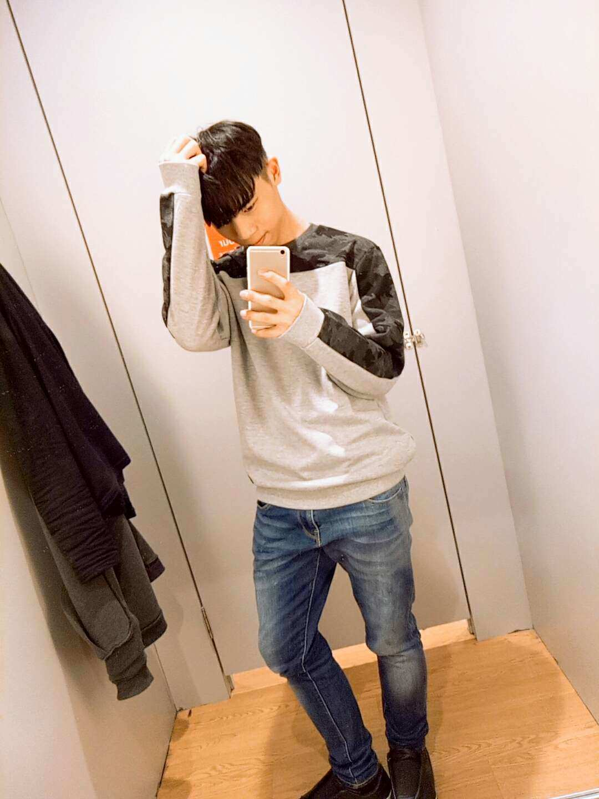
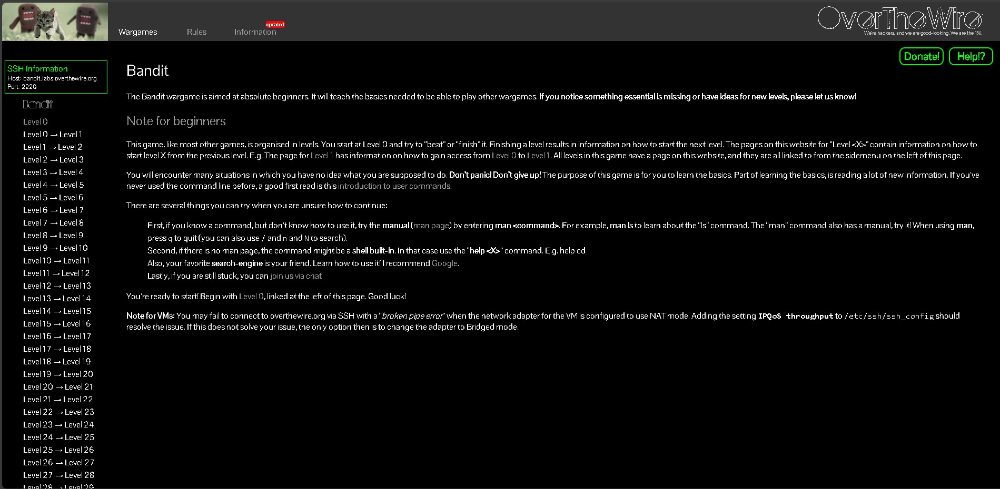
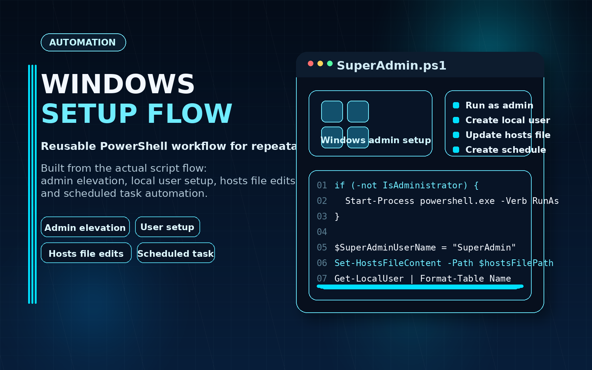
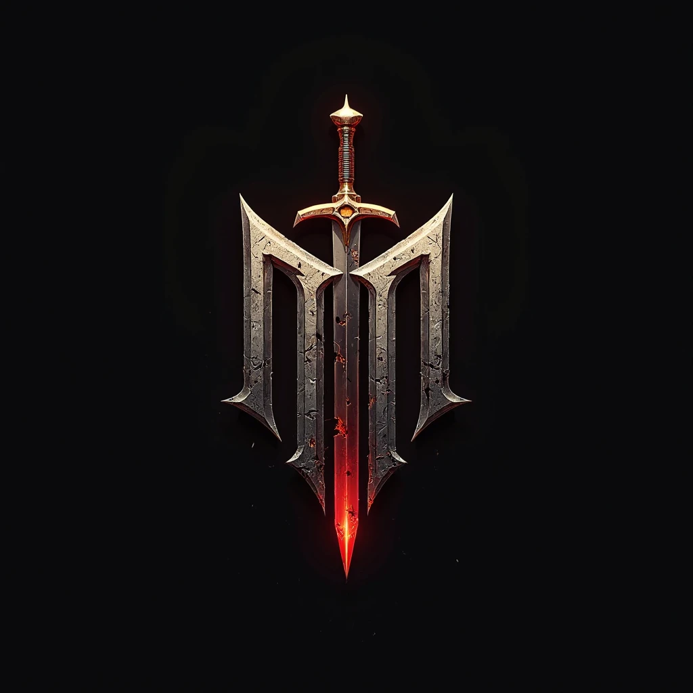

Cybersecurity-focused builder and creative technologist
Jeremiah Wong Zhi Qi
Building practical security work, technical projects, and creative systems that show how I solve problems.
I build across cybersecurity, automation, software, and creative development with a hands-on, project-based learning style. Start with the featured work below to quickly review my labs, scripts, notes, and prototype builds in one place.

Quick proof
Review the clearest proof paths first
If you want the fastest overview, start with one of these four routes. Each one leads to a focused page that explains the work before sending you deeper into the portfolio.
Security fundamentals
Security Learning and Labs
Review guided security practice, Linux and SSH fundamentals, and documented lab work that shows how I build practical skills step by step.
Start with the Bandit case study →Automation work
Technical Projects
See scripting and workflow-improvement work built to make repeatable setup tasks faster, clearer, and easier to reuse.
Review the automation case study →Creative systems
Creative Tech Builds
Explore a structured game prototype that shows how I apply technical thinking to interactive design, systems planning, and project execution.
Open the Nightfall Kingdoms case study →Structured learning proof
Certifications and Supporting Proof
Check the curated certifications page for formal learning proof and the context behind how those certificates support the wider portfolio.
View certifications proof →Selected work
Featured projects
These are the strongest starting points if you want to understand how I work across security, scripting, and creative technology.

Cybersecurity Labs · Linux · SSH fundamentalsGuided security walkthrough
Bandit Walkthrough and Security Notes
Documented a step-by-step Bandit walkthrough to strengthen Linux, SSH, and command line fundamentals while keeping the learning process reviewable.
View case study →
Automation PowerShell · Setup workflow · Admin tasksReusable system setup flow
Windows Setup Automation Script
Built a PowerShell setup script to make repeatable computer setup work faster and more consistent in an education environment.
View case study →
Creative tech Unreal Engine · Systems design · WorldbuildingInteractive prototype build
Nightfall Kingdoms Prototype
Developed an Unreal Engine prototype to explore worldbuilding, systems design, and interactive concept development through a structured game project.
View case study →Core strengths
How I turn learning into usable work
My strongest habits are practical execution, structured learning, and documenting work clearly enough that it can be reviewed, repeated, and improved.
Hands-on foundations
Cybersecurity Fundamentals
Build practical security foundations through labs, Linux workflows, walkthroughs, and course-backed study that turns theory into repeatable practice.
Structured execution
Technical Problem Solving
Break larger goals into smaller working parts so projects move forward with clearer priorities, cleaner steps, and easier review.
Workflow improvement
Scripting and Automation
Use scripts and lightweight tooling to reduce repetitive setup work, improve consistency, and make useful workflows easier to reuse.
Interactive systems
Creative Development
Apply technical thinking to game development and experimental builds that strengthen systems planning, iteration, and creative execution.
Clear knowledge capture
Documentation and Learning
Capture notes, setup steps, and lessons learned so progress stays understandable, shareable, and easier to build on later.
Cybersecurity direction
Building toward a stronger cybersecurity portfolio
Cybersecurity is the core direction of my portfolio. I use hands-on labs, technical notes, certifications, and practical projects to strengthen my understanding of systems, security concepts, and problem-solving workflows.
About
The builder behind the work
I am a cybersecurity-focused builder who learns by turning curiosity into practical, documented work. Across security labs, scripting projects, web experiments, and creative builds, I try to make each project useful enough to review, repeat, and improve.
The proof on this homepage shows the clearest entry points first. The About page explains how I work, what I am building toward, and why this portfolio brings security, automation, and creative technology together.
Go there next if you want the context behind the projects, the working style behind the notes, and the direction behind the portfolio.
See the full story behind the portfolio →Notes and writeups
Learning logs and technical notes
This section shows how I document my learning, capture useful references, and keep project progress visible.
Security Notes
Cybersecurity-focused notes, blog entries, tools, and learning progress.
Open section →Lab Writeups
Bandit walkthrough notes and practical command line learning material.
Read writeup →Setup Guides
General technical notes, including workflow support and setup-oriented scripting work.
View blog →Project Logs
Development updates and experiments tied to ongoing creative technology work.
See updates →Proof
Selected certifications
These certifications support my learning path and reflect a structured commitment to building stronger technical knowledge.
Contact
Ready to talk about a project or opportunity?
If the proof above feels relevant, the best next step is to reach out with context. Use the contact page when you want to share project details, goals, timelines, or the portfolio page that made you contact me.
For a faster first conversation, WhatsApp is the quickest path. For a more complete message, the contact page is the strongest starting point.
Detailed outreach
Use the contact page for project context
Share the type of opportunity, what you need help with, and any case study, note, or proof page you want to discuss so the conversation starts with clearer direction.
Open contact form →Direct outreach
Use WhatsApp for the fastest first message
If you prefer to start with a direct message, WhatsApp is the fastest way to open the conversation before moving into more detail.
Message on WhatsApp →Supporting review
Send the proof path with your message
Featured projects, notes, case studies, and the resume make it easier to point to the exact work or direction you want to discuss.
Browse notes and updates →Useful links for the next step: